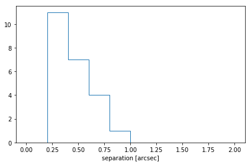
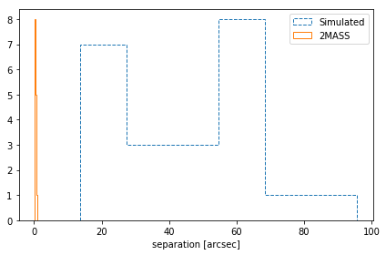
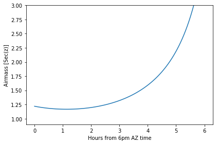
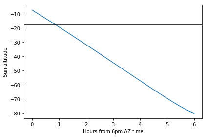

Using astropy.coordinates to Match Catalogs and Plan Observations¶
Authors¶
Erik Tollerud, Kelle Cruz
Learning Goals¶
TBD
Keywords¶
coordinates, catalog matching, observational astronomy, astroquery
Summary¶
In this tutorial, we will explore how the astropy.coordinates
package and related astropy functionality can be used to help in
planning observations or other exercises focused on large coordinate
catalogs.
In[1]:
# Python standard-library
from urllib.parse import urlencode
from urllib.request import urlretrieve
# Third-party dependencies
from astropy import units as u
from astropy.coordinates import SkyCoord
from astropy.table import Table
import numpy as np
from IPython.display import Image
# Set up matplotlib and use a nicer set of plot parameters
import matplotlib.pyplot as plt
%matplotlib inline
Section 0: Describing on-sky locations with coordinates¶
Let’s start by considering a field around the picturesque Hickson Compact Group 7. To do anything with this, we need to get an object that represents the coordinates of the center of this group.
In[2]:
hcg7_center = SkyCoord(9.81625*u.deg, 0.88806*u.deg, frame='icrs')
hcg7_center
Out[2]:
<SkyCoord (ICRS): (ra, dec) in deg
(9.81625, 0.88806)>
Note: If you already worked through Coords 1: Getting Started with Coordinates, feel free to skip to Section 1.
In Astropy, the most common object you’ll work with for coordinates is
SkyCoord. A SkyCoord can be created most easily directly from
angles as shown below. It’s also wise to explicitly specify the frame
your coordinates are in, although this is not strictly necessary because
the default is ICRS.
(If you’re not sure what ICRS is, it’s basically safe to think of it as an approximation to an equatorial system at the J2000 equinox).
SkyCoord will also accept string-formatted coordinates either as separate strings for ra/dec or a single string. You’ll have to give units, though, if they aren’t part of the string itself.
In[3]:
SkyCoord('0h39m15.9s', '0d53m17.016s', frame='icrs')
Out[3]:
<SkyCoord (ICRS): (ra, dec) in deg
(9.81625, 0.88806)>
In[4]:
SkyCoord('0:39:15.9 0:53:17.016', unit=(u.hour, u.deg), frame='icrs')
Out[4]:
<SkyCoord (ICRS): (ra, dec) in deg
(9.81625, 0.88806)>
If the object you’re interested in is in
SESAME, you can also
look it up directly from its name using the SkyCoord.from_name()
class method1. Note that this requires an internet connection. It’s safe
to skip if you don’t have one, because we defined it above explicitly.
If you don’t know what a class method is, think of it like an
alternative constructor for a SkyCoord object – calling
SkyCoord.from_name() with a name gives you a new SkyCoord
object. For more detailed background on what class methods are and when
they’re useful, see this
page.
In[5]:
hcg7_center = SkyCoord.from_name('HCG 7')
hcg7_center
Out[5]:
<SkyCoord (ICRS): (ra, dec) in deg
(9.81625, 0.88805556)>
This object we just created has various useful ways of accessing the
information contained within it. In particular, the ra and dec
attributes are specialized
Quantity
objects (actually, a subclass called
Angle,
which in turn is subclassed by
Latitude
and
Longitude).
These objects store angles and provide pretty representations of those
angles, as well as some useful attributes to quickly convert to common
angle units:
In[6]:
type(hcg7_center.ra), type(hcg7_center.dec)
Out[6]:
(astropy.coordinates.angles.Longitude, astropy.coordinates.angles.Latitude)
In[7]:
hcg7_center.dec
Out[7]:
In[8]:
hcg7_center.ra
Out[8]:
In[9]:
hcg7_center.ra.hour
Out[9]:
0.6544166666666668
Now that we have a SkyCoord object, we can try to use it to access
data from the Sloan Digitial Sky Survey
(SDSS). Let’s start by trying to get a picture using the SDSS image
cutout service to make sure HCG7 is in the SDSS footprint and has good
image quality.
This requires an internet connection, but if it fails, don’t worry: the
file is included in the repository so you can just let it use the local
file'HCG7_SDSS_cutout.jpg', defined at the top of the cell.
In[10]:
impix = 1024
imsize = 12*u.arcmin
cutoutbaseurl = 'http://skyservice.pha.jhu.edu/DR12/ImgCutout/getjpeg.aspx'
query_string = urlencode(dict(ra=hcg7_center.ra.deg,
dec=hcg7_center.dec.deg,
width=impix, height=impix,
scale=imsize.to(u.arcsec).value/impix))
url = cutoutbaseurl + '?' + query_string
# this downloads the image to your disk
urlretrieve(url, 'HCG7_SDSS_cutout.jpg')
Out[10]:
('HCG7_SDSS_cutout.jpg', <http.client.HTTPMessage at 0x7f5eafed5650>)
Now lets take a look at the image.
In[11]:
Image('HCG7_SDSS_cutout.jpg')
Out[11]:

Section 1: Using coordinates and table to match and compare catalogs¶
At the end of the last section, we determined that HCG7 is in the SDSS imaging survey, so that means we can use the cells below to download catalogs of objects directly from the SDSS. Later on, we will match this catalog to another catalog covering the same field, allowing us to make plots using the combination of the two catalogs.
We will access the SDSS SQL database using the astroquery affiliated package. This will require an internet connection and a working install of astroquery. If you don’t have these you can just skip down two cells, because the data files are provided with the repository. Depending on your version of astroquery it might also issue a warning, which you should be able to safely ignore.
In[12]:
from astroquery.sdss import SDSS
sdss = SDSS.query_region(coordinates=hcg7_center, radius=20*u.arcmin,
spectro=True,
photoobj_fields=['ra','dec','u','g','r','i','z'])
Out[12]:
WARNING: AstropyDeprecationWarning: astropy.extern.six will be removed in 4.0, use the six module directly if it is still needed [astropy.extern.six]
/home/circleci/project/venv/lib/python3.7/site-packages/astroquery/sdss/__init__.py:29: UserWarning: Experimental: SDSS has not yet been refactored to have its API match the rest of astroquery (but it's nearly there).
warnings.warn("Experimental: SDSS has not yet been refactored to have its API "
astroquery queries gives us back an
astropy.table.Table
object. We could just work with this directly without saving anything to
disk if we wanted to. But here we will use the capability to write to
disk. That way, if you quit the session and come back later, you don’t
have to run the query a second time.
(Note that this won’t work fail if you skipped the last step. Don’t
worry, you can just skip to the next cell with Table.read and use
the copy of this table included in the tutorial.)
In[13]:
sdss.write('HCG7_SDSS_photo.dat', format='ascii')
Out[13]:
WARNING: AstropyDeprecationWarning: HCG7_SDSS_photo.dat already exists. Automatically overwriting ASCII files is deprecated. Use the argument 'overwrite=True' in the future. [astropy.io.ascii.ui]
If you don’t have internet, you can read the table into python by
running the cell below. But if you did the astroquery step above, you
could skip this, as the table is already in memory as the sdss
variable.
In[14]:
sdss = Table.read('HCG7_SDSS_photo.dat', format='ascii')
Ok, so we have a catalog of objects we got from the SDSS. Now lets say you have your own catalog of objects in the same field that you want to match to this SDSS catalog. In this case, we will use a catalog extracted from the 2MASS. We first load up this catalog into python.
In[15]:
twomass = Table.read('HCG7_2MASS.tbl', format='ascii')
Now to do matching we need SkyCoord objects. We’ll have to build
these from the tables we loaded, but it turns out that’s pretty
straightforward: we grab the RA and dec columns from the table and
provide them to the SkyCoord constructor. Lets first have a look at
the tables to see just what everything is that’s in them.
In[16]:
sdss # just to see an example of the format
Out[16]:
Table length=679| ra | dec | u | g | r | i | z |
|---|---|---|---|---|---|---|
| float64 | float64 | float64 | float64 | float64 | float64 | float64 |
| 9.71988610968663 | 1.09339890765928 | 19.13156 | 16.66429 | 15.63464 | 15.2711 | 15.0678 |
| 9.74611247630673 | 0.591449231550166 | 23.05453 | 20.36864 | 18.89596 | 17.70506 | 17.03628 |
| 9.86920962193142 | 1.14732159839393 | 18.14069 | 17.26402 | 16.98971 | 16.88275 | 16.84156 |
| 9.55015226532095 | 0.766470598377895 | 23.1909 | 21.01587 | 19.22556 | 18.64489 | 18.24633 |
| 10.1308684541377 | 0.985124080601424 | 22.96149 | 20.26961 | 18.62425 | 18.00917 | 17.63748 |
| 9.7759128638229 | 1.16282719518892 | 18.66272 | 17.50573 | 17.04795 | 16.83212 | 16.72537 |
| 9.82433382639942 | 0.912766204845535 | 15.65309 | 13.79814 | 12.99945 | 12.60293 | 12.30192 |
| 9.89007058144352 | 0.865355031465202 | 21.66543 | 20.87825 | 20.65047 | 20.56294 | 20.81351 |
| 9.88086807617191 | 0.730505475120484 | 22.74768 | 20.3159 | 18.79609 | 17.91989 | 17.38425 |
| 9.55600785533909 | 1.21658402678684 | 21.63662 | 19.28696 | 17.95102 | 17.30936 | 16.91159 |
| ... | ... | ... | ... | ... | ... | ... |
| 10.0801906978193 | 0.82800887542565 | 24.2233 | 21.97655 | 20.52338 | 19.08419 | 18.34464 |
| 9.82541006233078 | 0.621143327944009 | 22.43695 | 21.15314 | 19.34543 | 18.6977 | 18.30567 |
| 9.67115677915137 | 0.613274156765435 | 20.3403 | 19.09636 | 18.88319 | 18.70708 | 18.9788 |
| 9.8881397555765 | 0.618733088342771 | 20.08 | 18.9022 | 18.12659 | 17.74697 | 17.49411 |
| 9.61748622077778 | 1.06321510789949 | 23.80847 | 22.43591 | 20.45458 | 19.53195 | 19.28642 |
| 9.54348862966799 | 0.858067197343187 | 27.13021 | 21.74318 | 20.08013 | 19.00409 | 18.50626 |
| 9.97472997875178 | 0.705832712612601 | 23.44328 | 22.87574 | 21.38105 | 20.01275 | 19.34506 |
| 9.66793271677861 | 0.67502755929444 | 23.61436 | 19.73868 | 19.1374 | 18.02118 | 17.59506 |
| 9.78773262652439 | 0.656370468905465 | 19.64508 | 18.01632 | 17.33776 | 17.07853 | 16.91601 |
| 10.1173795145975 | 0.87836641257707 | 20.2802 | 18.21561 | 17.17077 | 16.70195 | 16.33029 |
In[17]:
twomass # just to see an example of the format
Out[17]:
Table masked=True length=23| designation | ra | dec | r_k20fe | j_m_k20fe | j_msig_k20fe | j_flg_k20fe | h_m_k20fe | h_msig_k20fe | h_flg_k20fe | k_m_k20fe | k_msig_k20fe | k_flg_k20fe | k_ba | k_phi | sup_ba | sup_phi | r_ext | j_m_ext | j_msig_ext | h_m_ext | h_msig_ext | k_m_ext | k_msig_ext | cc_flg | dist | angle |
|---|---|---|---|---|---|---|---|---|---|---|---|---|---|---|---|---|---|---|---|---|---|---|---|---|---|---|
| deg | deg | arcsec | mag | mag | mag | mag | mag | mag | deg | deg | arcsec | mag | mag | mag | mag | mag | mag | arcsec | deg | |||||||
| str16 | float64 | float64 | float64 | float64 | float64 | int64 | float64 | float64 | int64 | float64 | float64 | int64 | float64 | int64 | float64 | int64 | float64 | float64 | float64 | float64 | float64 | float64 | float64 | str1 | float64 | float64 |
| 00402069+0052508 | 10.086218 | 0.880798 | 9.4 | 13.835 | 0.068 | 0 | 13.01 | 0.086 | 0 | 12.588 | 0.089 | 0 | 0.8 | 70 | 0.82 | 35 | 18.62 | 13.632 | 0.088 | 12.744 | 0.104 | 12.398 | 0.105 | 0 | 972.120611 | 91.538952 |
| 00395984+0103545 | 9.99935 | 1.06514 | 12.9 | 12.925 | 0.035 | 0 | 12.183 | 0.042 | 0 | 11.89 | 0.067 | 0 | 0.8 | 35 | 0.7 | 40 | 35.9 | 12.469 | 0.048 | 11.91 | 0.066 | 11.522 | 0.087 | 0 | 916.927636 | 45.951861 |
| 00401849+0049448 | 10.077062 | 0.82913 | 6.0 | 14.918 | 0.086 | 0 | 14.113 | 0.107 | 0 | 13.714 | 0.103 | 0 | 0.6 | -15 | 1.0 | 90 | 11.35 | 14.631 | 0.121 | 13.953 | 0.169 | 13.525 | 0.161 | 0 | 962.489231 | 102.73149 |
| 00395277+0057124 | 9.969907 | 0.953472 | 5.3 | 14.702 | 0.049 | 0 | 14.248 | 0.069 | 0 | 13.899 | 0.095 | 0 | 0.6 | -60 | 0.44 | -50 | 10.59 | 14.62 | 0.144 | 14.15 | 0.296 | 13.73 | 0.2 | 0 | 601.136444 | 66.93659 |
| 00401864+0047245 | 10.077704 | 0.790143 | 7.6 | 15.585 | 0.134 | 1 | 15.003 | 0.18 | 1 | 14.049 | 0.142 | 1 | 0.5 | 30 | 0.46 | 30 | 14.48 | 14.977 | 0.138 | 14.855 | 0.303 | 13.653 | 0.18 | 0 | 1004.982128 | 110.53147 |
| 00393485+0051355 | 9.895219 | 0.859882 | 39.3 | 11.415 | 0.031 | 3 | 10.755 | 0.044 | 3 | 10.514 | 0.068 | 3 | 0.6 | -30 | 0.7 | -60 | 92.29 | 11.415 | 0.018 | 10.155 | 0.054 | 9.976 | 0.085 | 0 | 301.813395 | 109.639102 |
| 00392964+0103495 | 9.873526 | 1.063769 | 10.9 | 14.463 | 0.065 | 0 | 13.618 | 0.067 | 0 | 13.258 | 0.091 | 0 | 0.4 | 55 | 0.28 | 60 | 20.35 | 14.2 | 0.086 | 13.363 | 0.091 | 13.101 | 0.133 | 0 | 665.301415 | 18.051526 |
| 00403343+0049079 | 10.139293 | 0.818865 | 5.0 | 15.484 | 0.15 | 0 | -- | -- | -- | 13.97 | 0.137 | 0 | 1.0 | 90 | 1.0 | 90 | 10.05 | 15.035 | 0.183 | 14.725 | 0.0 | 13.654 | 0.189 | 0 | 1189.207905 | 102.088788 |
| 00393319+0035505 | 9.888305 | 0.597381 | 11.5 | 13.156 | 0.033 | 0 | 12.509 | 0.043 | 0 | 12.073 | 0.059 | 0 | 0.6 | -55 | 0.52 | -40 | 21.64 | 13.026 | 0.04 | 12.247 | 0.046 | 11.978 | 0.065 | 0 | 1078.11027 | 166.0785 |
| ... | ... | ... | ... | ... | ... | ... | ... | ... | ... | ... | ... | ... | ... | ... | ... | ... | ... | ... | ... | ... | ... | ... | ... | ... | ... | ... |
| 00391798+0041588 | 9.824936 | 0.699687 | 6.1 | 15.685 | 0.168 | 0 | 14.89 | 0.191 | 0 | 14.003 | 0.155 | 0 | 1.0 | 90 | 1.0 | 90 | 11.4 | 15.677 | 0.312 | 14.415 | 0.226 | 13.568 | 0.19 | 0 | 678.863209 | 177.360117 |
| 00384796+0034572 | 9.699858 | 0.582578 | 5.1 | 14.925 | 0.077 | 0 | 14.224 | 0.114 | 0 | 13.536 | 0.079 | 0 | 1.0 | 90 | 1.0 | 90 | 10.2 | 14.839 | 0.133 | 14.111 | 0.192 | 13.461 | 0.137 | 0 | 1176.842625 | 200.856597 |
| 00390392+0050579 | 9.766345 | 0.849419 | 5.0 | 14.895 | 0.07 | 0 | 14.238 | 0.087 | 0 | 13.834 | 0.11 | 0 | 1.0 | 90 | 1.0 | 90 | 10.05 | 14.706 | 0.107 | 14.033 | 0.132 | 13.75 | 0.187 | 0 | 227.201453 | 232.24689 |
| 00391339+0051508 | 9.805797 | 0.864135 | 52.8 | 10.362 | 0.014 | 0 | 9.631 | 0.017 | 0 | 9.334 | 0.024 | 0 | 0.3 | -15 | 0.4 | -15 | 75.02 | 10.279 | 0.015 | 9.527 | 0.016 | 9.247 | 0.023 | 0 | 93.990015 | 203.598476 |
| 00391786+0054458 | 9.824418 | 0.912743 | 27.9 | 11.082 | 0.016 | 0 | 10.384 | 0.022 | 0 | 10.147 | 0.032 | 0 | 0.5 | 5 | 0.7 | 5 | 42.75 | 10.914 | 0.018 | 10.251 | 0.021 | 10.031 | 0.03 | 0 | 93.596555 | 18.308033 |
| 00385879+0057269 | 9.744971 | 0.957478 | 5.0 | 15.535 | 0.122 | 0 | 14.796 | 0.145 | 0 | 14.278 | 0.165 | 0 | 1.0 | 90 | 1.0 | 90 | 10.05 | 15.535 | 0.122 | 14.623 | 0.227 | 14.147 | 0.269 | 0 | 358.163568 | 314.246475 |
| 00391879+0053308 | 9.828303 | 0.891909 | 15.4 | 13.044 | 0.047 | 0 | 12.412 | 0.063 | 0 | 12.077 | 0.094 | 0 | 0.8 | 60 | 0.74 | 65 | 23.62 | 12.755 | 0.048 | 12.283 | 0.072 | 11.713 | 0.096 | 0 | 45.544562 | 72.287562 |
| 00391213+0102408 | 9.80055 | 1.044691 | 5.0 | 15.568 | 0.126 | 0 | 15.047 | 0.181 | 0 | 14.356 | 0.176 | 0 | 1.0 | 90 | 1.0 | 90 | 10.05 | 15.295 | 0.181 | 15.047 | 0.181 | 14.067 | 0.25 | 0 | 566.696375 | 354.276982 |
| 00383990+0104442 | 9.666268 | 1.078968 | 5.3 | 15.255 | 0.108 | 0 | 14.232 | 0.121 | 0 | 13.873 | 0.113 | 0 | 1.0 | 90 | 1.0 | 90 | 10.44 | 15.151 | 0.18 | 13.812 | 0.149 | 13.552 | 0.155 | 0 | 873.946372 | 321.851314 |
| 00384916+0050212 | 9.704872 | 0.839244 | 5.1 | 15.075 | 0.088 | 0 | 14.651 | 0.17 | 0 | 13.804 | 0.101 | 0 | 1.0 | 90 | 1.0 | 90 | 10.2 | 15.053 | 0.159 | 14.651 | 0.17 | 13.682 | 0.171 | 0 | 437.740484 | 246.331036 |
OK, looks like they both have ra and dec columns, so we should
be able to use that to make SkyCoords.
You might first think you need to create a separate SkyCoord for
every row in the table, given that up until now all SkyCoords we
made were for just a single point. You could do this, but it will make
your code much slower. Instead, SkyCoord supports arrays of
coordinate values - you just pass in array-like inputs (array
Quantitys, lists of strings, Table columns, etc.), and
SkyCoord will happily do all of its operations element-wise.
In[18]:
coo_sdss = SkyCoord(sdss['ra']*u.deg, sdss['dec']*u.deg)
coo_twomass = SkyCoord(twomass['ra'], twomass['dec'])
Note a subtle difference here: you had to give units for SDSS but not for 2MASS. This is because the 2MASS table has units associated with the columns, while the SDSS table does not (so you have to put them in manually).
Now we simply use the SkyCoord.match_to_catalog_sky method to match
the two catalogs. Note that order matters: we’re matching 2MASS to SDSS
because there are many more entires in the SDSS, so it seems likely
that most 2MASS objects are in SDSS (but not vice versa).
In[19]:
idx_sdss, d2d_sdss, d3d_sdss = coo_twomass.match_to_catalog_sky(coo_sdss)
idx are the indecies into coo_sdss that get the closest matches,
while d2d and d3d are the on-sky and real-space distances
between the matches. In our case d3d can be ignored because we
didn’t give a line-of-sight distance, so its value is not particularly
useful. But d2d provides a good diagnosis of whether we actually
have real matches:
In[20]:
plt.hist(d2d_sdss.arcsec, histtype='step', range=(0,2))
plt.xlabel('separation [arcsec]')
plt.tight_layout()
Out[20]:
Ok, they’re all within an arcsecond that’s promising. But are we sure it’s not just that anything has matches within an arcescond? Lets check by comparing to a set of random points.
We first create a set of uniformly random points (with size matching
coo_twomass) that cover the same range of RA/Decs that are in
coo_sdss.
In[21]:
ras_sim = np.random.rand(len(coo_twomass))*coo_sdss.ra.ptp() + coo_sdss.ra.min()
decs_sim = np.random.rand(len(coo_twomass))*coo_sdss.dec.ptp() + coo_sdss.dec.min()
ras_sim, decs_sim
Out[21]:
(<Angle [ 9.92119559, 9.75273765, 10.10214383, 9.85991332, 9.59466766,
9.56954809, 9.76172005, 9.54844951, 9.6504318 , 9.66773088,
9.79111721, 9.97704704, 9.60206037, 9.96169664, 9.53105942,
10.00359072, 9.92669087, 10.02956004, 9.83395732, 10.05608682,
10.09161342, 10.01362927, 10.09811961] deg>,
<Angle [0.82065711, 0.80484796, 1.1999266 , 0.91446105, 1.09997012,
1.01421365, 0.66622618, 0.98582802, 0.60187715, 0.73036345,
1.20827865, 1.10599279, 0.94004561, 0.75195542, 0.93005968,
1.06687867, 1.05001572, 1.21216972, 1.03579566, 0.93551183,
1.21295817, 1.17883292, 0.72103544] deg>)
Now we create a SkyCoord from these points and match it to
coo_sdss just like we did above for 2MASS.
Note that we do not need to explicitly specify units for ras_sim and
decs_sim, because they already are unitful Angle objects because
they were created from coo_sdss.ra/coo_sdss.dec.
In[22]:
coo_simulated = SkyCoord(ras_sim, decs_sim)
idx_sim, d2d_sim, d3d_sim = coo_simulated.match_to_catalog_sky(coo_sdss)
Now lets plot up the histogram of separations from our simulated catalog so we can compare to the above results from the real catalog.
In[23]:
plt.hist(d2d_sim.arcsec, bins='auto', histtype='step', label='Simulated', linestyle='dashed')
plt.hist(d2d_sdss.arcsec, bins='auto', histtype='step', label='2MASS')
plt.xlabel('separation [arcsec]')
plt.legend(loc=0)
plt.tight_layout()
Out[23]:
Alright, great - looks like randomly placed sources should be more like an arcminute away, so we can probably trust that our earlier matches which were within an arcsecond are valid. So with that in mind, we can start computing things like colors that combine the SDSS and 2MASS photometry.
In[24]:
rmag = sdss['r'][idx_sdss]
grcolor = sdss['g'][idx_sdss] - rmag
rKcolor = rmag - twomass['k_m_ext']
plt.subplot(1, 2, 1)
plt.scatter(rKcolor, rmag)
plt.xlabel('r-K')
plt.ylabel('r')
plt.xlim(2.5, 4)
plt.ylim(18, 12) #mags go backwards!
plt.subplot(1, 2, 2)
plt.scatter(rKcolor, rmag)
plt.xlabel('r-K')
plt.ylabel('g-r')
plt.xlim(2.5, 4)
plt.tight_layout()
Out[24]:

For more on what matching options are available, check out the
separation and matching section of the astropy
documentation.
Or for more on what you can do with SkyCoord, see its API
documentation.
Exercises¶
Check that the d2d_sdss variable matches the on-sky separations you
get from comaparing the matched coo_sdss entries to coo_twomass.
Hint: You’ll likely find the SkyCoord.separation() method useful
here.
In[None]:
Compute the physical separation between two (or more) objects in the catalogs. You’ll need line-of-sight distances, so a reasonable guess might be the distance to HCG 7, which is about 55 Mpc.
Hint: you’ll want to create new SkyCoord objects, but with
distance attributes. There’s also a SkyCoord method that should
do the rest of the work, but you’ll have to poke around to figure out
what it is.
In[None]:
Transforming between coordinate systems and planning observations¶
Now lets say something excites you about one of the objects in this
catalog, and you want to know if and when you might go about observing
it. astropy.coordinates provides tools to enable this, as well.
Introducting frame transformations¶
To understand the code in this section, it may help to read over the
overview of the astropy coordinates
scheme.
The key bit to understand is that all coordinates in astropy are in
particular “frames”, and we can transform between a specific
SkyCoord object from one frame to another. For example, we can
transform our previously-defined center of HCG7 from ICRS to Galactic
coordinates:
In[25]:
hcg7_center.galactic
Out[25]:
<SkyCoord (Galactic): (l, b) in deg
(116.47556718, -61.83099914)>
The above is actually a special “quick-access” form which internally
does the same as what’s in the cell below: uses the transform_to()
method to convert from one frame to another.
In[26]:
from astropy.coordinates import Galactic
hcg7_center.transform_to(Galactic())
Out[26]:
<SkyCoord (Galactic): (l, b) in deg
(116.47556718, -61.83099914)>
Note that changing frames also changes some of the attributes of the object, but usually in a way that makes sense:
In[27]:
hcg7_center.galactic.ra # should fail because galactic coordinates are l/b not RA/Dec
Out[27]:
AttributeErrorTraceback (most recent call last)
<ipython-input-27-db41d046b9c9> in <module>
----> 1 hcg7_center.galactic.ra # should fail because galactic coordinates are l/b not RA/Dec
~/project/venv/lib/python3.7/site-packages/astropy/coordinates/sky_coordinate.py in __getattr__(self, attr)
598 # Fail
599 raise AttributeError("'{0}' object has no attribute '{1}'"
--> 600 .format(self.__class__.__name__, attr))
601
602 def __setattr__(self, attr, val):
AttributeError: 'SkyCoord' object has no attribute 'ra'
In[28]:
hcg7_center.galactic.b
Out[28]:
Using frame transformations to get to AltAz¶
To actually do anything with observability we need to convert to a frame local to an on-earth observer. By far the most common choice is horizontal coordinates, or “AltAz” coordinates. We first need to specify both where and when we want to try to observe.
In[29]:
from astropy.coordinates import EarthLocation
from astropy.time import Time
observing_location = EarthLocation(lat='31d57.5m', lon='-111d35.8m', height=2096*u.m) # Kitt Peak, Arizona
# If you're using astropy v1.1 or later, you can replace the above with this:
#observing_location = EarthLocation.of_site('Kitt Peak')
observing_time = Time('2010-12-21 1:00') # 1am UTC=6pm AZ mountain time
Now we use these to create an AltAz frame object. Note that this
frame has some other information about the atmosphere, which can be used
to correct for atmospheric refraction. Here we leave that alone, because
the default is to ignore this effect (by setting the pressure to 0).
In[30]:
from astropy.coordinates import AltAz
aa = AltAz(location=observing_location, obstime=observing_time)
aa
Out[30]:
<AltAz Frame (obstime=2010-12-21 01:00:00.000, location=(-1994310.09211632, -5037908.60633759, 3357621.75212217) m, pressure=0.0 hPa, temperature=0.0 deg_C, relative_humidity=0.0, obswl=1.0 micron)>
Now we can just transform our ICRS SkyCoord to AltAz to get the
location in the sky over Kitt Peak at the requested time.
In[31]:
hcg7_center.transform_to(aa)
Out[31]:
<SkyCoord (AltAz: obstime=2010-12-21 01:00:00.000, location=(-1994310.09211632, -5037908.60633759, 3357621.75212217) m, pressure=0.0 hPa, temperature=0.0 deg_C, relative_humidity=0.0, obswl=1.0 micron): (az, alt) in deg
(149.19392373, 55.0624696)>
Alright, it’s up at 6pm, but that’s pretty early to be observing. We could just try various times one at a time to see if the airmass is at a darker time, but we can do better: lets try to create an airmass plot.
In[32]:
# this gives a Time object with an *array* of times
delta_hours = np.linspace(0, 6, 100)*u.hour
full_night_times = observing_time + delta_hours
full_night_aa_frames = AltAz(location=observing_location, obstime=full_night_times)
full_night_aa_coos = hcg7_center.transform_to(full_night_aa_frames)
plt.plot(delta_hours, full_night_aa_coos.secz)
plt.xlabel('Hours from 6pm AZ time')
plt.ylabel('Airmass [Sec(z)]')
plt.ylim(0.9,3)
plt.tight_layout()
Out[32]:
Great! Looks like it’s at the lowest airmass in another hour or so
(7pm). But might that might still be twilight… When should we start
observing for proper dark skies? Fortunately, astropy provides a
get_sun function that can be used to check this. Lets use it to
check if we’re in 18-degree twilight or not.
In[33]:
from astropy.coordinates import get_sun
full_night_sun_coos = get_sun(full_night_times).transform_to(full_night_aa_frames)
plt.plot(delta_hours, full_night_sun_coos.alt.deg)
plt.axhline(-18, color='k')
plt.xlabel('Hours from 6pm AZ time')
plt.ylabel('Sun altitude')
plt.tight_layout()
Out[33]:
Looks like it’s just below 18 degrees at 7, so you should be good to go!
Exercises¶
Try to actually compute to some arbitrary precision (rather than eye-balling on a plot) when 18 degree twilight or sunrise/sunset hits on that night.
In[None]:
Try converting the HCG7 coordinates to an equatorial frame at some other equinox a while in the past (like J2000). Do you see the precession of the equinoxes?
Hint: To see a diagram of the supported frames look here. One of those will do what you need if you give it the right frame attributes.
In[None]:
Wrap-up¶
For lots more documentation on the many other features of
astropy.coordinates, check out its section of the
documentation.
You might also be interested in the astroplan affiliated
package, which uses the
astropy.coordinates to do more advanced versions of the tasks in the
last section of this tutorial.